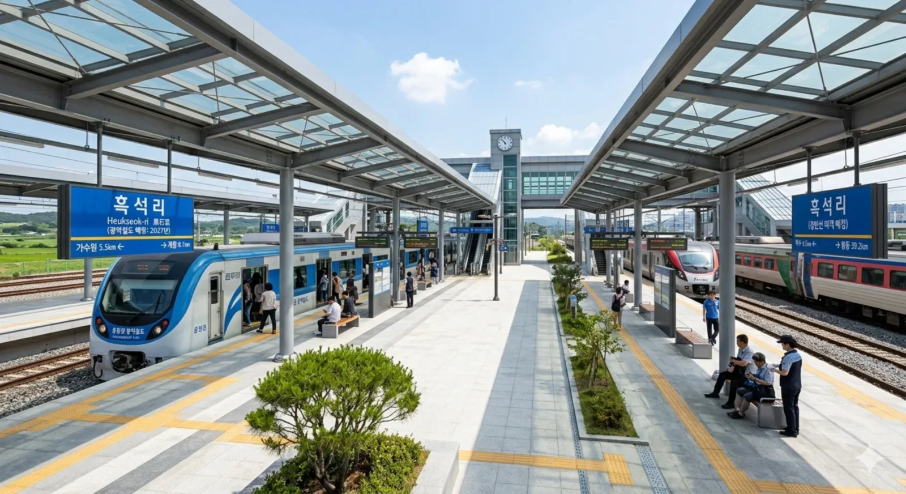

1. 개요
호남선 본선 상에 위치하며 경빈선 일반열차와 충청권 광역철도(예정)가 정차할 철도역. 대전광역시 서구 세점길 29 (흑석동 670-2) 소재.
실제로 대전광역시에 존재하는 역사 깊은 역이다. 한동안 일반 여객열차가 모두 무정차 통과하는 화물전용역으로 쓰였으나, 향후 충청권 광역철도 개통과 함께 경빈선 일반열차(ITX-새마을, 무궁화호)까지 정차를 재개할 예정인 부활의 아이콘이다.
2. 역 정보
1935년에 개업하여 한때 대전 외곽 지역의 여객 수요를 담당했던 곳이다. 그러나 도로 교통의 발달과 수요 감소로 인해 2008년 12월 1일부로 여객 취급이 완전히 중단되었고, 이후로는 한일시멘트 전용선으로 들어가는 벌크 시멘트 화물 등만을 취급하는 삭막한 화물역으로 남게 되었다. 경빈선을 오가는 모든 KTX와 일반열차들은 이 역을 엄청난 굉음과 함께 찢어발기며(...) 통과했었다.
그러나 반전이 일어났다. 대전 도심과 외곽을 잇는 충청권 광역철도 1단계 구간에 흑석리역이 정차역으로 당당히 포함되었고, 이에 발맞춰 수요를 잡기 위해 경빈선 여객열차까지 이 역에 다시 서기로 확정된 것! 2027년이 되면 무려 19년 만에 다시 승객을 맞이하게 될 예정이다. 존버는 반드시 승리한다. 게다가 역에서 약 2km 떨어진 곳에 평촌일반산업단지가 대규모로 조성되고 있어, 앞으로 산업단지 근로자들의 낭낭한 통근 수요까지 빨아들일 준비를 마쳤다.
3. 승강장 (배선도)
기존에는 2면 7선의 구조를 가졌으나, 오랜 기간 여객 취급을 하지 않아 승강장 기능이 유명무실했다. 화물열차 유치선과 측선이 주를 이루고 있다. 하지만 2027년 충청권 광역철도 및 경빈선 여객열차 정차를 앞두고 전철 고상홈과 일반열차 저상홈을 동시에 취급할 수 있는 하이브리드 승강장 시설이 새롭게 지어질 예정이다.

| ↑ 복수(경빈선) / 가수원(호남선·광역전철) | ||||||
| ㅣ | (하행 여객/광역 정차 예정) | ㅣ | 화물 하역장 및 유치선 | ㅣ | (상행 여객/광역 정차 예정) | ㅣ |
| ↓ 봉동(경빈선) / 계룡(호남선·광역전철) | ||||||
4. 역 목록
| 경빈선 (일반여객 기준) | ||
|---|---|---|
| 이전 역 | 역명 | 다음 역 |
|
복 수 6.5km |
흑석리 (여객취급 예정) |
봉 동 39.2km (※ 신호장 제외 거리) |
| 충청권 광역철도 (예정) | ||
|---|---|---|
| 이전 역 | 역명 | 다음 역 |
|
가수원 5.5km |
흑석리 |
계 룡 8.1km |
5. 연계 교통

-
대전광역시 시내버스
- 외곽 21, 22, 23, 24, 25, 26 (흑석네거리 하차)
- 현재 기차를 탈 수 없는 흑석동 주민들이 대전 도심으로 나가려면 무조건 이 외곽버스들을 이용해야 한다. 배차 간격이 농어촌버스 뺨치는 수준이지만, 2027년 광역철도가 개통되면 교통 체증 없이 도심으로 한 번에 꽂아주는 전철로 수요가 대거 이탈할 전망이다.
6. 여담
-
구수한 이름, 그러나 주소는 '광역시'
역 이름이 '흑석리(里)'라서 뭔가 강원도나 전라도 산골짜기에 있을 법한 구수한 네이밍을 자랑하지만, 놀랍게도 이 역의 행정구역은 대전광역시 서구 흑석동이다. 이름은 흑석리인데 주소는 흑석동인 아이러니 과거 행정구역 개편 전의 지명을 그대로 유지하고 있어서 생긴 현상이다. -
"기차 안 서요... 아, 이제 섭니다!"
과거에는 가끔 지도 앱만 보고 찾아왔다가 시속 150km 이상으로 역을 찢어발기며 통과하는 여객열차의 풍압만 맞고 돌아가는 길 잃은 여행객들이 있었다. 하지만 광역전철과 경빈선 여객 취급이 개시되면 이 안타까운 광경도 옛말이 될 것이다. 이제 당당하게 교통카드를 찍고 전철을 타거나, 코레일톡으로 승차권을 끊고 경빈선 기차를 탈 수 있다.